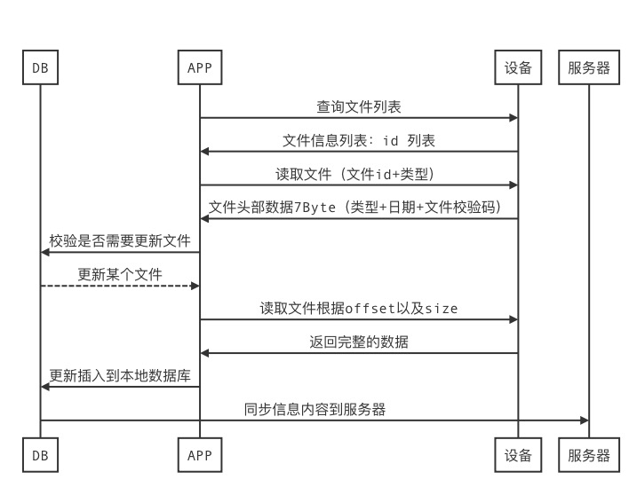

杰理健康SDK
常见问题答疑
常见问题答疑
1. 前言
本文档主要记录比较经常遇到的问题，统一进行答疑，方便快速开发。开发者可以先检索已有的问题是否符合你遇到的问题；如果是新的问题，请按照以下步骤进行提问，我们将尽快解答。
描述问题的情况以及测试环境，请参考提问格式：
提供打印日志，输出方式请参考测试调试，最好可以提供现象截图或视频
提问格式
问题描述: XXXXXX
测试环境: 固件: AC695N_watch_SDK_Vxxx 或 AC6971N_watch_SDK_Vxxx 软件: JL_Health_SDK_Vxxx
问题标签: SDK接入 表盘操作 文件传输 健康数据/运动数据 资源更新(固件升级) 其他
复现步骤: 1. xxxx 2. xxxx 3.xxxx
复现概率: 必现, 1/20, n / m
公版Demo是否复现: 是，否
问题出现时间段: yyyy/MM/dd hh:mm - yyyy/MM/dd hh:mm 例如: 2022/05/28 17:00 - 2022/05/28 17:02
备注: xxxx
重点: 开发前，请阅读杰理健康SDK开发文档
2. 常见问题
2.1. 如何分析SDK的日志信息
SDK的日志信息分为打印获取到的内容类，如下面：
2022-09-20 10:07:25.931229+0800 JL_OTA[64857:10204438] 【AC701N_WATCH】<*--- Device Info ---*>
2022-09-20 10:07:25.932049+0800 JL_OTA[64857:10204438] --->Version Protocol: 2.0
2022-09-20 10:07:25.932315+0800 JL_OTA[64857:10204438] --->Battery: 100
2022-09-20 10:07:25.932398+0800 JL_OTA[64857:10204438] --->Current Vol: 0
2022-09-20 10:07:25.932467+0800 JL_OTA[64857:10204438] --->Max Vol: 0
2022-09-20 10:07:25.932595+0800 JL_OTA[64857:10204438] --->BT Addr: 53d5dac59d43
2022-09-20 10:07:25.932678+0800 JL_OTA[64857:10204438] --->BT status: 0
2022-09-20 10:07:25.932830+0800 JL_OTA[64857:10204438] --->Function: 0x6
2022-09-20 10:07:25.932917+0800 JL_OTA[64857:10204438] --->Current Function(Info):0
2022-09-20 10:07:25.933009+0800 JL_OTA[64857:10204438] --->Usb SD LineIn OnlineStatus:14
2022-09-20 10:07:25.933177+0800 JL_OTA[64857:10204438] --->Version Firmware:0.0.0.0
2022-09-20 10:07:25.933293+0800 JL_OTA[64857:10204438] --->SDK type:9
2022-09-20 10:07:25.933447+0800 JL_OTA[64857:10204438] --->Version uboot:27.52.0.0
2022-09-20 10:07:25.933581+0800 JL_OTA[64857:10204438] --->Partition:0
2022-09-20 10:07:25.933648+0800 JL_OTA[64857:10204438] --->Bootloader:1
2022-09-20 10:07:25.933727+0800 JL_OTA[64857:10204438] --->OTA status:0
2022-09-20 10:07:25.933809+0800 JL_OTA[64857:10204438] --->OTA headset:0
2022-09-20 10:07:25.933888+0800 JL_OTA[64857:10204438] --->OTA Watch:0
2022-09-20 10:07:25.933979+0800 JL_OTA[64857:10204438] --->Pid Vid:00020081
2022-09-20 10:07:25.934052+0800 JL_OTA[64857:10204438] --->Auth Key:hE9yfseX6UdK7rFh
2022-09-20 10:07:25.934177+0800 JL_OTA[64857:10204438] --->Pro Code:jl_v8
2022-09-20 10:07:25.934375+0800 JL_OTA[64857:10204438] --->BLE Addr: 53d5dac59d43
2022-09-20 10:07:25.934575+0800 JL_OTA[64857:10204438] --->BLE Only：1
2022-09-20 10:07:25.934708+0800 JL_OTA[64857:10204438] --->Fashe Enable：0
2022-09-20 10:07:25.934805+0800 JL_OTA[64857:10204438] --->Fashe Type：0
2022-09-20 10:07:25.934957+0800 JL_OTA[64857:10204438] --->MD5 Enable：0
2022-09-20 10:07:25.935048+0800 JL_OTA[64857:10204438] --->isSupport Game Mode：0
2022-09-20 10:07:25.935119+0800 JL_OTA[64857:10204438] --->isSearchDevice Enable：1
2022-09-20 10:07:25.935258+0800 JL_OTA[64857:10204438] --->isKaraoke Enable：0
2022-09-20 10:07:25.935402+0800 JL_OTA[64857:10204438] --->isKaraokeEQ Enable：1
2022-09-20 10:07:25.935493+0800 JL_OTA[64857:10204438] --->isFlash Enable：1
2022-09-20 10:07:25.935590+0800 JL_OTA[64857:10204438] --->isANC Enable：0
2022-09-20 10:07:25.935662+0800 JL_OTA[64857:10204438] --->isSupportLog Enable:0
2022-09-20 10:07:25.935770+0800 JL_OTA[64857:10204438] --->isSupportDhaFitting Enable:0
2022-09-20 10:07:25.936090+0800 JL_OTA[64857:10204438] --->File Subcontract Transfer Support Crc16：1
2022-09-20 10:07:25.936355+0800 JL_OTA[64857:10204438] --->Read Firmware File In New Way：1
2022-09-20 10:07:25.936723+0800 JL_OTA[64857:10204438] --->SmallFile Way：1
SDK的日志信息的信息交互打印，参考如下：
2022-09-20 10:07:25.937554+0800 JL_OTA[64857:10204438] 【AC701N_WATCH】(SEND)-->JL_CMD Opcode:0x 7 SN:2 Reply:1 Param:(5)ffffffffff
2022-09-20 10:07:25.998682+0800 JL_OTA[64857:10204438] 【AC701N_WATCH】(GET)-->JL_RSP Opcode:0x 7 SN:2 Status:0 Param:(50)ff02006416020800000000000000000000000000000003000000000405414c4c020600020900080a00000000000000020f00
主要是通过分析交互打印，从而判断问题的起因，上述打印中：
(SEND)–>JL_CMD 代表的是设备端发出内容，opcode是指命令的类型，SN：代表命令序号，Replay代表是否需要回复，param才是命令的内容
(GET)–>JL_RSP 代表的是设备端回复的内容，opcode是指命令的类型，SN：代表命令序号，status代表命令状态，param才是命令的内容
(GET)–>JL_CMD 代表的是设备端主动推的内容，opcode是指命令的类型，SN：代表命令序号，Replay代表是否需要回复，param才是命令的内容
这里的SN必须是对应的，比方说手机端发出了一个SN为10的，设备端回复的必须也是10的SN，否则就视为命令丢失或无响应。同理，设备端主动上推信息时，若要求回复，那回复的内容必须携带对应的SN值；
Status错误码分析：
状态码 |
描述 |
备注 |
|---|---|---|
0x00 |
成功 |
|
0x01 |
失败 |
|
0x02 |
未定义 |
|
0x03 |
忙碌状态 |
|
0x04 |
没有收到回复 |
|
0x05 |
CRC出错 |
|
0x06 |
数据CRC出错 |
|
0x07 |
参数益出 |
|
0x08 |
数据溢出 |
|
0x09 |
LRC获取出错 |
2.2. 接入问题
2.2.1. 怎么证明SDK初始化已经完成了
虽然iOS这边的库已经是集成度较高，但还是没有把一键初始化的功能做到一起，需要开发者在使用时，先进行信息获取的初始化，具体可以参考以下内容：
未见以下内容的log时，需要先去获取对应的设备基础信息，包括系统信息、设备信息，当初始化打印没有出现以下内容时，可以重新去获取一下设备的基础信息。
/*
2022-04-26 10:39:47.789361+0800 EasyAutoTest[15132:1974245] 【AC701N_gm】<*--- Device Info ---*>
2022-04-26 10:39:47.791252+0800 EasyAutoTest[15132:1974245] --->Version Protocol: 2.0
2022-04-26 10:39:47.792085+0800 EasyAutoTest[15132:1974245] --->Battery: 100
2022-04-26 10:39:47.792418+0800 EasyAutoTest[15132:1974245] --->Current Vol: 0
2022-04-26 10:39:47.792635+0800 EasyAutoTest[15132:1974245] --->Max Vol: 0
2022-04-26 10:39:47.793988+0800 EasyAutoTest[15132:1974245] --->BT Addr: cf7286153d07
2022-04-26 10:39:47.794391+0800 EasyAutoTest[15132:1974245] --->BT status: 0
2022-04-26 10:39:47.795416+0800 EasyAutoTest[15132:1974245] --->Function: 0x6
2022-04-26 10:39:47.795754+0800 EasyAutoTest[15132:1974245] --->Current Function(Info):0
2022-04-26 10:39:47.797147+0800 EasyAutoTest[15132:1974245] --->Usb SD LineIn OnlineStatus:14
2022-04-26 10:39:47.798049+0800 EasyAutoTest[15132:1974245] --->Version Firmware:0.0.0.0
2022-04-26 10:39:47.798702+0800 EasyAutoTest[15132:1974245] --->SDK type:9
2022-04-26 10:39:47.799470+0800 EasyAutoTest[15132:1974245] --->Version uboot:27.52.0.0
2022-04-26 10:39:47.800125+0800 EasyAutoTest[15132:1974245] --->Partition:1
2022-04-26 10:39:47.801354+0800 EasyAutoTest[15132:1974245] --->Bootloader:0
2022-04-26 10:39:47.801958+0800 EasyAutoTest[15132:1974245] --->OTA status:0
2022-04-26 10:39:47.802426+0800 EasyAutoTest[15132:1974245] --->OTA headset:0
2022-04-26 10:39:47.802868+0800 EasyAutoTest[15132:1974245] --->OTA Watch:0
2022-04-26 10:39:47.803271+0800 EasyAutoTest[15132:1974245] --->Pid Vid:00020081
2022-04-26 10:39:47.803676+0800 EasyAutoTest[15132:1974245] --->Auth Key:hE9yfseX6UdK7rFh
2022-04-26 10:39:47.804151+0800 EasyAutoTest[15132:1974245] --->Pro Code:jl_v8
2022-04-26 10:39:47.804752+0800 EasyAutoTest[15132:1974245] --->BLE Addr: cf7286108d55
2022-04-26 10:39:47.805082+0800 EasyAutoTest[15132:1974245] --->BLE Only：1
2022-04-26 10:39:47.805447+0800 EasyAutoTest[15132:1974245] --->Fashe Enable：0
2022-04-26 10:39:47.805617+0800 EasyAutoTest[15132:1974245] --->Fashe Type：0
2022-04-26 10:39:47.806079+0800 EasyAutoTest[15132:1974245] --->MD5 Enable：0
2022-04-26 10:39:47.806383+0800 EasyAutoTest[15132:1974245] --->isGame Mode：0
2022-04-26 10:39:47.806731+0800 EasyAutoTest[15132:1974245] --->isSearchDevice Enable：1
2022-04-26 10:39:47.807078+0800 EasyAutoTest[15132:1974245] --->isKaraoke Enable：0
2022-04-26 10:39:47.807423+0800 EasyAutoTest[15132:1974245] --->isKaraokeEQ Enable：1
2022-04-26 10:39:47.807775+0800 EasyAutoTest[15132:1974245] --->isFlash Enable：1
2022-04-26 10:39:47.808125+0800 EasyAutoTest[15132:1974245] --->isANC Enable：0
2022-04-26 10:39:47.808553+0800 EasyAutoTest[15132:1974245] --->File Subcontract Transfer Support Crc16：1
2022-04-26 10:39:47.808879+0800 EasyAutoTest[15132:1974245] --->Read Firmware File In New Way：1
2022-04-26 10:39:47.809200+0800 EasyAutoTest[15132:1974245] --->SmallFile Way：1
2022-04-26 10:39:47.810499+0800 EasyAutoTest[15132:1974245] 【AC701N_gm】(SEND)-->JL_CMD Opcode:0x 7 SN:3 Reply:1 Param:(5)ffffffffff
2022-04-26 10:39:47.811970+0800 EasyAutoTest[15132:1974245] 【AC701N_gm】(GET)-->JL_RSP Opcode:0xd6 SN:2 Status:0 Param:(28)01000000010000000100000001000010000457303031010001c601c6
2022-04-26 10:39:47.813198+0800 EasyAutoTest[15132:1974245] ---> Flash Info <---
2022-04-26 10:39:47.813411+0800 EasyAutoTest[15132:1974245] ---> System Type:1
2022-04-26 10:39:47.813501+0800 EasyAutoTest[15132:1974245] ---> FlashSize:16777216
2022-04-26 10:39:47.813577+0800 EasyAutoTest[15132:1974245] ---> FatsSize:16777216
2022-04-26 10:39:47.813651+0800 EasyAutoTest[15132:1974245] ---> Version:0
2022-04-26 10:39:47.813735+0800 EasyAutoTest[15132:1974245] ---> Cluster:16
2022-04-26 10:39:47.813818+0800 EasyAutoTest[15132:1974245] ---> Flash Status:0
2022-04-26 10:39:47.813888+0800 EasyAutoTest[15132:1974245] ---> Mtu Read:256
2022-04-26 10:39:47.813958+0800 EasyAutoTest[15132:1974245] ---> Mtu Write:256
2022-04-26 10:39:47.814092+0800 EasyAutoTest[15132:1974245] ---> Match:W001
2022-04-26 10:39:47.814191+0800 EasyAutoTest[15132:1974245] ---> Screen W:454 H:454
2022-04-26 10:39:48.388377+0800 EasyAutoTest[15132:1974245] 【AC701N_gm】(GET)-->JL_RSP Opcode:0x 7 SN:3 Status:0 Param:(50)ff02006416020800000000000000000000000000000003000000000405414c4c020600020900080a00000000000000020f00
2022-04-26 10:39:48.390799+0800 EasyAutoTest[15132:1974245] <*--- System Info(公共) ---*>
2022-04-26 10:39:48.391147+0800 EasyAutoTest[15132:1974245] --->Battery: 100
2022-04-26 10:39:48.391638+0800 EasyAutoTest[15132:1974245] --->DEV support : 8
2022-04-26 10:39:48.393313+0800 EasyAutoTest[15132:1974245] --->usb:00000000 sd_0:00000000 sd_1:00000000 flash:00000003 flash2:00000000
2022-04-26 10:39:48.394690+0800 EasyAutoTest[15132:1974245] --->play file support: LL
2022-04-26 10:39:48.395291+0800 EasyAutoTest[15132:1974245] --->Current Function(CMD):0
2022-04-26 10:39:48.395821+0800 EasyAutoTest[15132:1974245] --->mTWS_Mode:0
2022-04-26 10:39:48.396233+0800 EasyAutoTest[15132:1974245] --->mTWS_Status:0
2022-04-26 10:39:48.396930+0800 EasyAutoTest[15132:1974245] --->mTWS_Addr:000000000000
2022-04-26 10:39:48.397495+0800 EasyAutoTest[15132:1974245] --->通话状态：0
*/
添加的接口是：
/*当前接口均在JL_ManagerM.h*/
#pragma mark ---> 获取设备信息
extern NSString *kJL_MANAGER_TARGET_INFO;
-(void)cmdTargetFeatureResult:(JL_CMD_RESPOND __nullable)result;
#pragma mark ---> 获取系统信息（全获取）
/**
@param function JL_FunctionCode
@param result 回复
*/
-(void)cmdGetSystemInfo:(JL_FunctionCode)function
Result:(JL_CMD_RESPOND __nullable)result;
缺乏基础信息的建议是在库里连接上后自动询问必要的设备信息
在JLManagerM -> JL_SystemTime -> cmdSetSystemTime
/*--- 同步时间戳 ----*/
NSLog(@"--->(2) SET Device time.");
NSDate *date = [NSDate new];
JL_SystemTime *systemTime = self.mBleEntityM.mCmdManager.mSystemTime;
[systemTime cmdSetSystemTime:date];
下方是获取电量的一个例子
+(void)getSystemBattery:(JL_ManagerM *)mgr{
[mgr cmdGetSystemInfo:JL_FunctionCodeCOMMON SelectionBit:0x0001 Result:^(JL_CMDStatus status, uint8_t sn, NSData * _Nullable data) {
if (status == JL_CMDStatusSuccess) {
//电量
//读取一下设备信息内容
int battery = mgr.deviceModel.battery;
NSLog(@"jl device battery: %d", battery);
}
}];
}
iOS这边获取到的设备信息都存放在一个叫JLModel_Device.h的类里头，当初始化之后，开发者可以使用JL_ManagerM.h类里头的方法-(JLModel_Device *)outputDeviceModel;获取对应的信息。
JL_EntityM *entity = [[JL_RunSDK sharedMe] mBleEntityM];
JLModel_Device *model = [entity.mCmdManager outputDeviceModel];
2.2.2. 如何使用自定义蓝牙接入
自定义连接模块可参考以下文档：
2.2.3. 自定义蓝牙接入时，如何使用设备的广播包信息？
利用系统提供的搜索蓝牙设备接口，从回调中获取广播包信息操作如下：
-(void)centralManager:(CBCentralManager *)central
didDiscoverPeripheral:(CBPeripheral *)peripheral
advertisementData:(NSDictionary<NSString *,id> *)advertisementData
RSSI:(NSNumber *)RSSI
{
NSString *ble_name = advertisementData[@"kCBAdvDataLocalName"];
//NSLog(@"---> Found Name:%@ Rssi:%@",ble_name,RSSI);
if (ble_name.length == 0) return;
NSData *ble_AD = advertisementData[@"kCBAdvDataManufacturerData"];
NSDictionary *info = [JL_BLEAction bluetoothKey_1:_filterKey Filter:advertisementData];
NSString *ble_addr = [JL_BLEAction otaBleMacAddressFromCBAdvDataManufacturerData:ble_AD];
/*--- 过滤蓝牙设备 ---*/
BOOL isOk = [info[@"ISOK"] boolValue];
//设备类型
JL_DeviceType deviceType = [info[@"TYPE"] intValue];
//转换成JL_EntityM对象
NSMutableDictionary *mDic = [NSMutableDictionary new];
[mDic setObject:peripheral forKey:@"BLE"];
[mDic setObject:rssi forKey:@"RSSI"];
[mDic setObject:info?:@{} forKey:@"INFO"];
JL_EntityM *entity = [JL_EntityM changeToEntity:mDic];
}
！！！！注意：_filterKey 为过滤码，当不需要过滤时，填nil即可。
当完成转换时，即可获得以下的属性值
@property(strong,nonatomic) NSString *mUUID;
@property(strong,nonatomic) NSNumber *mRSSI;
@property(readonly,copy,nonatomic)NSString *mItem;
/**
* mType值说明：
* -1：传统设备
* 0：AI音箱
* 1：TWS
* 2：数码充电仓
* 3：普通耳机
* 4：声卡类型
* 5：手表类型
*/
@property(assign,nonatomic) JL_DeviceType mType;
@property(assign,nonatomic) BOOL isExclusive;
@property(assign,nonatomic) BOOL isBound;
@property(assign,nonatomic) BOOL isEdrLinked;
@property(assign,nonatomic) BOOL isCharging;
@property(assign,nonatomic) BOOL isCharging_L;
@property(assign,nonatomic) BOOL isCharging_R;
@property(assign,nonatomic) BOOL isCharging_C;
@property(assign,nonatomic) uint8_t mPower;
@property(assign,nonatomic) uint8_t mPower_L;
@property(assign,nonatomic) uint8_t mPower_R;
@property(assign,nonatomic) uint8_t mPower_C;
@property(strong,nonatomic) NSString *mVID;
@property(strong,nonatomic) NSString *mPID;
@property(strong,nonatomic) NSString *mEdr;
@property(strong,nonatomic) NSString *mBleAddr; //OTA设备需要
@property(assign,nonatomic) uint8_t mChipType; //0：690x 1：692x 2：693x
@property(assign,nonatomic) uint8_t mProtocolType; //默认0x00
/**
0x00 - dismiss 不显示弹窗
0x01 - unconnected 经典蓝牙未连接
iOS : 不显示电量，请手动连接XXX
Android：不显示电量，显示连接按钮
0x02 - connected 经典蓝牙已连接
iOS：判断已连接的经典蓝牙名是否一致，若未连接或蓝牙名不一致，
显示“设备已被占用”。若一致，显示电量等信息。
Android：判断已连接的经典蓝牙Mac是否一致，若未连接或蓝牙Mac不一致，
显示“设备已被占用”。若一致，显示电量等信息。
0x03 - connecting 设备正在自动回连
Android 和 iOS 显示“设备正在自动回连 ”
0x04 - connectionless 设备不可连接（需要按下配对按键）
Android 和 iOS 显示配对操作方式
*/
@property(assign,nonatomic) int8_t mScene;
@property(assign,nonatomic) uint8_t mSeq; //Seq 每次开机会加 1，用于app区分是否同一次开机
@property(assign,nonatomic) uint8_t mTWS_Paired; //TWS配对标识，0:未配对 1:已配对
@property(assign,nonatomic) uint8_t mTWS_Cap; //0:关盖 1:开盖
@property(assign,nonatomic) uint8_t mTWS_Mode; //0:充电模式 1:发射模式
@property(assign,nonatomic) uint8_t mHeadsetMaster; //主从标识 (0:从机， 1:主机)
@property(assign,nonatomic) uint8_t mHeadsetLinkEnable; //连接标识
这里部分属性值会根据设备类型来判断是否具备实际实用意义
2.2.4. 为什么会出现Error: BLE Pair timeout.的错误打印
当前错误描述的是：设备认证超时。
排除错误的步骤是：
1、检查设备是否开启了认证模式
2、当设备是关闭认证模式时，手机端也需要对应关闭设备认证功能，如下：
/*--- JLSDK ADD ---*/
_mAssist = [[JL_Assist alloc] init];
_mAssist.mNeedPaired = NO; //是否需要设备认证
/*--- 自定义配对码(16个字节配对码) ---*/
//char pairkey[16] = {0x01,0x02,0x03,0x04,
// 0x01,0x02,0x03,0x04,
// 0x01,0x02,0x03,0x04,
// 0x01,0x02,0x03,0x04};
//NSData *pairData = [NSData dataWithBytes:pairkey length:16];
_mAssist.mPairKey = nil; //配对秘钥（或者自定义配对码pairData）
_mAssist.mService = FLT_BLE_SERVICE; //服务号
_mAssist.mRcsp_W = FLT_BLE_RCSP_W; //特征「写」
_mAssist.mRcsp_R = FLT_BLE_RCSP_R; //特征「读」
2.2.4.1. 如何使用一键连接？
一键连接，实际就是通过BLE的方式桥接上EDR，从而实现，只要连上了BLE，后台的EDR就会被自动连上。
1、目前该功能只在iOS13+支持
2、使用SDK的蓝牙连接时，无需管理，SDK内部已经做了处理
3、使用自定义蓝牙连接，可参考以下代码：
CBCentralManager *bleManager;
JL_EntityM *bleEntity;
if (@available(iOS 13.0, *)) {
[bleManager connectPeripheral:bleEntity.mPeripheral
options:@{CBConnectPeripheralOptionNotifyOnDisconnectionKey:@(YES),
CBConnectPeripheralOptionEnableTransportBridgingKey:@(YES)}];
} else {
// Fallback on earlier versions
[bleManager connectPeripheral:bleEntity.mPeripheral
options:@{CBConnectPeripheralOptionNotifyOnDisconnectionKey:@(YES)}];
}
官方详细资料查询：CBConnectPeripheralOptionEnableTransportBridgingKey
2.2.4.2. 连接设备时，弹窗要求先连接经典蓝牙
这是由于APP上为了让用户使用上经典蓝牙才有的打电话/播音乐等功能，APP上有一个设计时需要用户手动先连上设备的EDR（经典蓝牙）才可以让用户继续连接低功耗蓝牙；但为了兼容后面，有更低功耗需求的设备（关闭景帝那蓝牙）仅仅在需要的时候才回去连接设备的经典蓝牙的时候，可以参考以下内容：
查找设备会弹出连接提示的位置：
kUI_SHOW_EDR_VIEW就拿扫描连接设备ui举例： 可以在下面的位置添加修改处理：
JL_EntityM *mEntity = nil;
for (JL_EntityM *entity in self.foundArray) {
NSString *edr = [[edrText lowercaseString] stringByReplacingOccurrencesOfString:@":" withString:@""];
if ([entity.mEdr isEqual:edr]) {
NSLog(@"QR Scan To ---> %@",entity.mItem);
mEntity = entity;
break;
}
}
if (mEntity == nil) return;
[JL_Tools post:kUI_JL_BLE_SCAN_CLOSE Object:nil];
/*--- 判断经典蓝牙是否连接 ---*/
if ([JL_RunSDK isConnectEdr:mEntity.mEdr]) {
self.scanEntity = mEntity;
NSLog(@"QR Scan Conecting ---> %@",self.scanEntity.mItem);
[kJL_BLE_Multiple connectEntity:self.scanEntity Result:^(JL_EntityM_Status status) {
[JL_Tools mainTask:^{
if (status == JL_EntityM_StatusPaired) {
[self showUIConnectOK];
}else{
[self showUIConnectFail];
}
[JL_Tools delay:1.0 Task:^{
[self.navigationController popToRootViewControllerAnimated:YES];
[JLApplicationDelegate.tabBarController setSelectedIndex:2];
}];
}];
}];
}else{
if (mEntity.mSpecialType == JLDevSpecialType_Reconnect) {
if (mEntity.mProtocolType == 0) {
[JL_Tools post:@"kUI_SHOW_EDR_VIEW" Object:nil];
}
if (mEntity.mProtocolType == 1) {
self.scanEntity = mEntity;
NSLog(@"QR Scan Conecting ---> %@",self.scanEntity.mItem);
[kJL_BLE_Multiple connectEntity:self.scanEntity Result:^(JL_EntityM_Status status) {
[JL_Tools mainTask:^{
if (status == JL_EntityM_StatusPaired) {
[self showUIConnectOK];
}else{
[self showUIConnectFail];
}
[JL_Tools delay:1.0 Task:^{
[self.navigationController popToRootViewControllerAnimated:YES];
[JLApplicationDelegate.tabBarController setSelectedIndex:2];
}];
}];
}];
}
}else{
/*--- 正常设备需要提示用户连接经典蓝牙 ---*/
// [JL_Tools post:@"kUI_SHOW_EDR_VIEW" Object:nil];
/* 当业务需求不需要先连接经典蓝牙时，可以直接忽略掉发起弹窗的通知*/
if(mEntity.mProtocolType == 0x00){
[JL_Tools post:@"kUI_SHOW_EDR_VIEW" Object:nil];
}else if(mEntity.mProtocolType == 0x02){
/*这里的版本判断，用于区分了是否需要线连接经典蓝牙，当此值为0x02时，则不需要线连接设备经典蓝牙*/
self.scanEntity = mEntity;
NSLog(@"QR Scan Conecting ---> %@",self.scanEntity.mItem);
[kJL_BLE_Multiple connectEntity:self.scanEntity Result:^(JL_EntityM_Status status) {
[JL_Tools mainTask:^{
if (status == JL_EntityM_StatusPaired) {
[self showUIConnectOK];
}else{
[self showUIConnectFail];
}
[JL_Tools delay:1.0 Task:^{
[self.navigationController popToRootViewControllerAnimated:YES];
[JLApplicationDelegate.tabBarController setSelectedIndex:2];
}];
}];
}];
}
}
[JL_Tools delay:1.5 Task:^{
[self.navigationController popToRootViewControllerAnimated:YES];
[JLApplicationDelegate.tabBarController setSelectedIndex:2];
}];
}
2.2.5. 如何使用系统已连接的设备对象？
这个功能是基于通过自身APP连接上的设备，由于设备支持ANCS的特性，在拉远距离到设备断开后，再回来范围内，系统就会主动连上该蓝牙(BLE)。
解决方案：
通过 central.retrievePeripherals (withIdentifiers:[uuid]) 来获取uuid或者开发者在第一次连上配对的时候就记录了当前的设备UUID。
通过
JL_BLEMultipie类的 -(JL_EntityM _Nullable)makeEntityWithUUID:(NSString)uuid; 获取JL_EntityM对象。（注意这里的对象由于不是通过广播包获取到的，所以会缺失部分关键信息，诸如：edr地址等）通过
JL_BLEMultipie类的 -(void)connectEntity:(JL_EntityM)entity Result:(JL_EntityM_STATUS_BK)result*再次连接上设备即可。连上后走正常的获取设备信息+获取系统信息即可完成接入。
#pragma mark ---> 获取设备信息
extern NSString *kJL_MANAGER_TARGET_INFO;
-(void)cmdTargetFeatureResult:(JL_CMD_RESPOND __nullable)result;
-(void)cmdTargetFeature:(uint32_t)feature Result:(JL_CMD_RESPOND __nullable)result;
#pragma mark ---> 获取系统信息（全获取）
/**
@param function JL_FunctionCode
@param result 回复
*/
-(void)cmdGetSystemInfo:(JL_FunctionCode)function
Result:(JL_CMD_RESPOND __nullable)result;
-(void)cmdGetSystemInfoResult;
2.2.6. 设备认证配对
设备认证是本SDK与设备交互时的一个认证加密配对方法，默认公版程序中所有固件都开启了当前功能；若需要关闭此功能需要跟固件端以及安卓端协商。
使用公版的BLE连接时，设置的方法如下：
/*--- 初始化JL_SDK ---*/
self.mBleMultiple = [[JL_BLEMultiple alloc] init];
//是否开启过滤
self.mBleMultiple.BLE_FILTER_ENABLE = YES;
//是否开启设备认证
self.mBleMultiple.BLE_PAIR_ENABLE = YES;
self.mBleMultiple.BLE_TIMEOUT = 7;
使用自定义蓝牙连接事，设置方法如下：
/*--- JLSDK ADD ---*/
_mAssist = [[JL_Assist alloc] init];
_mAssist.mNeedPaired = NO; //是否需要设备认证
2.3. 健康数据同步疑问
2.3.1. 健康数据获取的逻辑
获取的逻辑时序图如下：

2.3.2. 小文件格式说明
文件类型（1Byte） |
日期(年月日)（4Byte） |
文件校验码（2Byte） |
版本号(1Byte) |
存储间隔（1Byte） |
保留位（2Byte） |
N *（数据格式） |
|---|---|---|---|---|---|---|
参考小文件中的： |
yyyyMMdd |
CRC校验码 |
当前版本:0 |
数据存储的时间间隔 |
保留位 |
参考下面的： |
2.3.2.1. 数据格式
时间（时分）（2Byte） |
长度（2 Byte） |
数据内容（N Byte） |
|---|---|---|
HHmm |
数据内容的长度 |
参考下表： |
备注：当数据格式是睡眠内容时
如果时间为0xFFFF，则说明该段数据格式为分析数据内容，应使用以下方式解析：
睡眠得分（1Byte） |
深睡比例（1Byte） |
浅睡比例（1Byte） |
rem比例（1Byte） |
时长评价（1Byte） |
深睡连续性得分（1Byte） |
夜间醒来次数（1Byte） |
|---|---|---|---|---|---|---|
0~100 |
0~100 |
0~100 |
0~100 |
（0 未更新 1 偏低 2正常 3 偏高） |
0~100 |
0~127 |
2.3.2.2. 数据内容
数据内容类型 |
数据内容 |
备注 |
|---|---|---|
睡眠 |
n *（|睡眠类型（1Byte）|时长（1Byte）单位分钟|） |
|
心率 |
n *（数值（1Byte）次） |
静息心率在文件头部的保留位的低地址 |
血氧 |
n * (数值 （1Byte）次) |
|
全天步数 |
n*（|步数（2Byte 单位：步）|距离 （2Byte 单位：10米）|热量（2Byte 单位：千卡）|） *注 增量 |
|
体重 |
n*(|整数（1Byte）10~250|两位小数（1Byte）0~99| 单位:kg) |
2.3.2.3. 睡眠类型
前提条件：睡眠类型的日期是以睡醒的时间作为记录日期
睡眠类型判断逻辑：
1、当检测到佩戴者的睡眠的开始时间或结束时间落在零点到六点范围内的都认为是夜间睡眠
2、当检测到佩戴者睡觉开始时间和结束时间均落在其他睡眠时间（非零点到六点）范围内都认为是零星小睡
睡眠日期时分的区分策略：
1、当收到一段夜间睡眠数据解析时，00:00会作为分界线，区分了前后一天的数据，当睡眠类型为零星小睡时只作为当天的睡眠数据
类型 |
类型值 |
备注 |
|---|---|---|
清醒 |
0xFF |
|
浅睡 |
0x01 |
|
深睡 |
0x02 |
|
REM（快速眼动） |
0x03 |
|
零星小睡 |
0x04 |
不计入图表展示 |
2.3.2.4. 解析睡眠数据/步数统计数据源码
SDK中所提供的睡眠数据/步行数据解析方法如下：
都首先继承了
JLWearSyncHealthChart.h
JLWearSyncHealthChart 的实现源码如下：
//
// JLWearSyncHealthChart.h
// JL_BLEKit
//
// Created by EzioChan on 2021/10/30.
// Copyright © 2021 www.zh-jieli.com. All rights reserved.
//
#import <Foundation/Foundation.h>
#import "JLWatchEnum.h"
#import "JLModel_SmallFile.h"
NS_ASSUME_NONNULL_BEGIN
/// 数据格式
@interface JLWearSyncHealthDataModel : NSObject
/// 时间（时分）
@property(nonatomic,strong)NSString *HHmm;
/// 数据内容
@property(nonatomic,strong)NSData *data;
@end
@interface JLWearSyncHealthChart : NSObject
/// 文件类型
@property(nonatomic,assign)JL_SmallFileType type;
/// 日期
@property(nonatomic,strong)NSString *yyyyMMdd;
/// 版本
@property(nonatomic,assign)UInt8 version;
/// 存储间隔
@property(nonatomic,assign)UInt8 interval;
/// CRC校验码
@property(nonatomic,assign)UInt16 crcCode;
/// 保留位
@property(nonatomic,assign)UInt16 reserved;
/// N*数据格式
@property(nonatomic,strong)NSArray<JLWearSyncHealthDataModel *> *dataArray;
/// 源数据
@property(nonatomic,strong)NSData *sourceData;
-(void)createHeadInfo:(NSData *)dt;
@end
/******************************************.m文件实现**************************************************/
#import "JLWearSyncHealthChart.h"
#import "NSData+ToUnit.h"
@implementation JLWearSyncHealthDataModel
@end
@implementation JLWearSyncHealthChart
-(void)createHeadInfo:(NSData *)dt{
self.type = [dt subf:0 t:1].beUint8;
int year = [dt subf:1 t:2].beBigendUint16;
int month = [dt subf:3 t:1].beUint8;
int day = [dt subf:4 t:1].beUint8;
self.yyyyMMdd = [self createDate:@[@(year),@(month),@(day)]];
NSLog(@"yymmdd:%@",self.yyyyMMdd);
self.crcCode = [dt subf:5 t:2].beBigendUint16;
self.version = [dt subf:7 t:1].beUint8;
self.interval = [dt subf:8 t:1].beUint8;
self.reserved = [dt subf:9 t:2].beLittleUint16;
self.sourceData = dt;
NSMutableArray<JLWearSyncHealthDataModel *> *array = [NSMutableArray new];
NSInteger seek = 11;
while (seek<dt.length) {
JLWearSyncHealthDataModel *model = [JLWearSyncHealthDataModel new];
int hour = [dt subf:seek t:1].beUint8;
int min = [dt subf:seek+1 t:1].beUint8;
model.HHmm = [self createDate:@[@(hour),@(min)]];
NSLog(@"hhmm:%@",model.HHmm);
int len = [self rePlaceOxFF:[dt subf:seek+2 t:2]].beBigendUint16;
model.data = [dt subf:seek+4 t:len];
[array addObject:model];
seek = seek+4+len;
}
self.dataArray = array;
}
-(NSData *)rePlaceOxFF:(NSData *)data{
NSMutableData *dt = [NSMutableData new];
NSInteger seek = 0;
while (seek < data.length) {
uint8_t v = [data subf:seek t:1].beUint8;
if (v == 0xff) {
uint8_t b[1] = {0x00};
NSData *dt1 = [NSData dataWithBytes:b length:1];
[dt appendData:dt1];
}else{
[dt appendData:[data subf:seek t:1]];
}
seek+=1;
}
return dt;
}
-(NSString *)createDate:(NSArray *)list{
NSMutableString *string = [NSMutableString new];
for (int i = 0; i<list.count; i++) {
int HH = [list[i] intValue];
if (HH<10) {
[string appendFormat:@"0%d",HH];
}else{
[string appendFormat:@"%d",HH];
}
}
return string;
}
@end
步数统计分析源码
#import "JLWearSyncHealthChart.h"
NS_ASSUME_NONNULL_BEGIN
//MARK: - 步数全天数据
@interface JLWearStepCountModel:NSObject
/// 步数 单位：步
@property(nonatomic,assign)UInt16 count;
/// 距离 单位：10米
@property(nonatomic,assign)UInt16 duration;
///热量
@property(nonatomic,assign)UInt16 Calories;
@end
@interface StepCountData : NSObject
/// 开始时间
@property(nonatomic,strong)NSDate *startDate;
/// 步数数组
@property(nonatomic,strong)NSArray <JLWearStepCountModel *>*stepCounts;
@end
/// 全天步数图表数据
@interface JLWearSyncHealthStepChart : JLWearSyncHealthChart
///数据块内容
@property(nonatomic,strong)NSArray <StepCountData *> *stepCountlist;
-(instancetype)initChart:(NSData *)sourceData;
@end
NS_ASSUME_NONNULL_END
/******************************************.m文件实现**************************************************/
#import "JLWearSyncHealthStepChart.h"
#import "NSData+ToUnit.h"
@implementation StepCountData
@end
@implementation JLWearStepCountModel
@end
@implementation JLWearSyncHealthStepChart
-(instancetype)initChart:(NSData *)sourceData{
self = [super init];
if (self) {
[self createHeadInfo:sourceData];
NSDateFormatter *formatter = [NSDateFormatter new];
formatter.dateFormat = @"yyyyMMddHHmm";
NSMutableArray *targetArray = [NSMutableArray new];
for (JLWearSyncHealthDataModel *model in self.dataArray) {
NSString *beginTime = [NSString stringWithFormat:@"%@%@",self.yyyyMMdd,model.HHmm];
NSMutableArray <JLWearStepCountModel *>*newArray = [NSMutableArray new];
NSInteger seek = 0;
while (seek < model.data.length) {
JLWearStepCountModel *mdl = [JLWearStepCountModel new];
mdl.count = [model.data subf:seek t:2].beBigendUint16;
mdl.duration = [model.data subf:seek+2 t:2].beBigendUint16;
mdl.Calories = [model.data subf:seek+4 t:2].beBigendUint16;
[newArray addObject:mdl];
seek+=6;
}
StepCountData *hd = [StepCountData new];
hd.startDate = [formatter dateFromString:beginTime];
hd.stepCounts = newArray;
[targetArray addObject:hd];
}
self.stepCountlist = targetArray;
}
return self;
}
@end
睡眠数据解析实现源码：
//
// JLWearSyncHealthSleepChart.h
// JL_BLEKit
//
// Created by JLee on 2021/11/1.
// Copyright © 2021 www.zh-jieli.com. All rights reserved.
//
#import "JLWearSyncHealthChart.h"
NS_ASSUME_NONNULL_BEGIN
typedef NS_ENUM(NSUInteger, SleepScoreLevel) {
///未更新
SleepScoreLevel_UnKnow,
///偏低
SleepScoreLevel_Low,
///正常
SleepScoreLevel_Normal,
///偏高
SleepScoreLevel_Hight
};
//MARK: - 全天睡眠统计分析
@interface JLAnalyzeSleep : NSObject
///夜间睡眠得分
@property(nonatomic,assign)NSInteger sleepScore;
///深睡比例
@property(nonatomic,assign)NSInteger deepSleepPresent;
/// 浅睡比例
@property(nonatomic,assign)NSInteger shallowSleepPresent;
/// rem比例
@property(nonatomic,assign)NSInteger remSleepPresent;
///总睡眠时长评价
@property(nonatomic,assign)SleepScoreLevel allSleepLevel;
///深睡时长评价
@property(nonatomic,assign)SleepScoreLevel deepSleepLevel;
///浅睡时长评价
@property(nonatomic,assign)SleepScoreLevel shallowSleepLevel;
///rem睡眠时长评价
@property(nonatomic,assign)SleepScoreLevel remSleepLevel;
/// 深睡连续性得分
@property(nonatomic,assign)NSInteger deepSleepScre;
///夜间醒来次数
@property(nonatomic,assign)NSInteger weakupNum;
@end
@interface JLWearSleepModel:NSObject
/// 睡眠类型
@property(nonatomic,assign)WatchSleepType type;
/// 睡眠时长
@property(nonatomic,assign)NSInteger duration;
@end
@interface SleepData:NSObject
/// 开始时间
@property(nonatomic,strong)NSDate *startDate;
/// 睡眠类型数组
@property(nonatomic,strong)NSArray<JLWearSleepModel *> *sleeps;
@end
@interface JLWearSyncHealthSleepChart : JLWearSyncHealthChart
/// 睡眠数据
@property(nonatomic,strong)NSArray<SleepData *> *sleepDataArray;
///睡眠结果分析
@property(nonatomic,strong)JLAnalyzeSleep *analyze;
-(instancetype)initChart:(NSData *)sourceData;
@end
NS_ASSUME_NONNULL_END
/******************************************.m文件实现**************************************************/
#import "JLWearSyncHealthSleepChart.h"
#import "NSData+ToUnit.h"
@implementation JLAnalyzeSleep
@end
@implementation JLWearSleepModel
@end
@implementation SleepData
@end
@implementation JLWearSyncHealthSleepChart
-(instancetype)initChart:(NSData *)sourceData{
self = [super init];
if (self) {
[self createHeadInfo:sourceData];
NSMutableArray *targetArray = [NSMutableArray new];
int index = -1;
for (int i = 0; i<self.dataArray.count; i++) {
JLWearSyncHealthDataModel *model = self.dataArray[i];
if ([model.HHmm isEqualToString:@"0000"]) {
index = i;
}
}
NSDateFormatter *formatter = [NSDateFormatter new];
formatter.dateFormat = @"yyyyMMddHHmm";
for (int i = 0; i<self.dataArray.count; i++) {
JLWearSyncHealthDataModel *model = self.dataArray[i];
NSString *beginTime = [NSString stringWithFormat:@"%@%@",self.yyyyMMdd,model.HHmm];
if (index > i) {
NSDate *date = [formatter dateFromString:beginTime];
NSDate *lastDay = [NSDate dateWithTimeInterval:-24*60*60 sinceDate:date];
beginTime = [formatter stringFromDate:lastDay];
}
if ([model.HHmm isEqualToString:@"255255"]) {
self.analyze = [JLAnalyzeSleep new];
self.analyze.sleepScore = [model.data subf:0 t:1].beUint8;
self.analyze.deepSleepPresent = [model.data subf:1 t:1].beUint8;
self.analyze.shallowSleepPresent = [model.data subf:2 t:1].beUint8;
self.analyze.remSleepPresent = [model.data subf:3 t:1].beUint8;
uint8_t allLevel = [model.data subf:4 t:1].beUint8;
self.analyze.allSleepLevel = allLevel & 0x03;
self.analyze.deepSleepLevel = (allLevel >> 2) & 0x03;
self.analyze.shallowSleepLevel = (allLevel >> 4) & 0x03;
self.analyze.remSleepLevel = (allLevel >> 6);
self.analyze.deepSleepScre = [model.data subf:5 t: 1].beUint8;
self.analyze.weakupNum = [model.data subf:6 t:1].beUint8;
continue;
}
NSMutableArray *newArray = [NSMutableArray new];
NSInteger seek = 0;
while (seek < model.data.length-1) {
NSData *value = [model.data subf:seek t:2];
JLWearSleepModel *md = [JLWearSleepModel new];
md.type = value.beUint8;
md.duration = [value subf:1 t:1].beUint8;
seek+=2;
[newArray addObject:md];
}
SleepData *spdt = [SleepData new];
spdt.startDate = [formatter dateFromString:beginTime];
spdt.sleeps = newArray;
[targetArray addObject:spdt];
}
self.sleepDataArray = targetArray;
}
return self;
}
@end
2.3.3. 实时数据扩展问题
2.3.3.1. 扩展自定义实时数据的方法
1、继承JLSportDataModel类
2、根据实际扩展的命令号赋值：
这里命令号是Uint32，目前通过bit位进行内容查询，已经使用了0~9bit位。
self.funcMask = 0x01<<10
3、填写需要请求的submask
这里所请求的submask是1 byte，通过bit位的开关来确定是否要获取设备某个类型的值
具体需要和设备协商
uint8_t target = 0x01;
uint8_t k[] = {target};
self.rqData = [NSData dataWithBytes:k length:1];
请求的例子：
- (instancetype)init
{
self = [super init];
if (self) {
self.funcMask = 0x01<<10;
}
return self;
}
/// 请求心率内容设置
/// @param rt 是否需要实时心率
/// @param rting 是否需要静息心率
/// @param max 是否需要最大心率
+(HeartRate*)requireRealTime:(BOOL)rt Resting:(BOOL)rting Max:(BOOL)max{
HeartRate *hb = [[HeartRate alloc] init];
hb.isSingle = false;
uint8_t target = 0x00;
if (rt) {
target = target|0x01;
}
if (rting) {
target = target|(0x01<<1);
}
if (max) {
target = target|(0x01<<2);
}
uint8_t k[] = {target};
hb.rqData = [NSData dataWithBytes:k length:1];
return hb;
}
4.使用方法：
-(void)refreshTest{
JL_EntityM *entity = [[JL_RunSDK sharedMe] mBleEntityM];
if(!entity)return;
JLWearable *w = [JLWearable sharedInstance];
NSMutableArray *array = [NSMutableArray new];
[array addObject:[HeartRate require:YES distance:YES calories:YES]];
[w w_requestSportData:array withEntity:entity];
///添加监听
[w w_addDelegate:self];
}
/// 设备回调无法区分的数据内容
/// @param value 数据区域，根据类型解析数据
/// @param submask 对应查询的参数,描述功能类型，作用域
/// @param type 数据类型
-(void)jlWatchUnDefineData:(NSData *)value subMask:(NSData *)submask Type:(UInt8)type{
//TODO:
}
2.4. 表盘插入问题
2.4.1. 注意的细节
表盘文件名要大写，而且要在名字前添加：“/”，诸如：/WATCH1
2.4.2. 表盘传输后不刷新
需要主动发命令去请求设备刷新UI
/*当前接口在 JL_ManagerM -> mFlashManager */
#pragma mark ---> 设置表盘(文件)
/**
表盘操作
@param path 路径
@param flag 0x00:读取当前表盘
0x01:设置表盘
0x03:获取表盘额外信息，如版本
0x04:激活自定义表盘
0x05:获取对应的自定义表盘名字
@param result 回复
*/
-(void)cmdWatchFlashPath:(NSString*__nullable)path
Flag:(JL_DialSetting)flag
Result:(JL_FlashWatch_BK __nullable)result;
2.4.3. 自定义表盘背景流程
预定义属性：
NSString *mWatchName;//表盘名称
NSString *watchBinName;//表盘背景名字
JL_ManagerM *mCmdManager;//命令管理器
获取当前表盘的信息
[self->mCmdManager.mFlashManager cmdWatchFlashPath:nil Flag:JL_DialSettingReadCurrentDial Result:^(uint8_t flag, uint32_t size, NSString * _Nullable path, NSString * _Nullable describe) { NSLog(@"获取表盘成功!\n当前表盘 ---> %@",path); if (flag == 0) { self->mWatchName = path; }else{ self->mWatchName = @"空"; } }];
当表盘名字不为空时，继续查询当前表盘背景
-(void)getWatchBgName{
if (self->mWatchName.length == 0 || [self->mWatchName isEqual:@"/null"]) return;
[self->mCmdManager.mFlashManager cmdWatchFlashPath:self->mWatchName Flag:JL_DialSettingGetDialName
Result:^(uint8_t flag, uint32_t size,
NSString * _Nullable path,
NSString * _Nullable describe) {
NSString *txt = @"读取背景成功!";
if (flag != 0) txt = @"读取背景失败~";
NSLog(@"%@",txt);
if (flag == 0) {
NSLog(@"当前背景 ---> %@",path);
NSString *name = [path lastPathComponent].uppercaseString;
//赋值表盘背景名字
if ([path isEqual:@"null"]) {
[self newBgName:self->mWatchName];
}else{
self->watchBinName = name;// [path stringByReplacingOccurrencesOfString:@"/" withString:@""];
}
}
}];
}
-(void)newBgName:(NSString*)name{
NSString *wName = [name stringByReplacingOccurrencesOfString:@"/" withString:@""];
if ([wName isEqual:@"WATCH"]) {
watchBinName = @"BGP_W000";
} else {
NSString *txt = [wName stringByReplacingOccurrencesOfString:@"WATCH" withString:@""];
NSInteger strLen = txt.length;
if (strLen == 1) watchBinName = [NSString stringWithFormat:@"BGP_W00%@", txt];
if (strLen == 2) watchBinName = [NSString stringWithFormat:@"BGP_W0%@", txt];
if (strLen == 3) watchBinName = [NSString stringWithFormat:@"BGP_W%@", txt];
}
}
准备表盘背景图片内容
UIImage *image = [UIImage imageWithData:ImageData];;
NSLog(@"图片分辨率 ---> w:%.1f h:%.1f",image.size.width,image.size.height);
压缩图片为适配设备的尺寸
JLModel_Device *model = [mCmdManager outputDeviceModel];
uint16_t dev_W = model.flashInfo.mScreenWidth;
uint16_t dev_H = model.flashInfo.mScreenHeight;
if (dev_W == 0) dev_W = 240;
if (dev_H == 0) dev_H = 240;
NSData *imageData = [BitmapTool resizeImage:image andResizeTo:CGSizeMake(dev_W, dev_H)];
将图片格式转换成设备适用的数据
-(void)changeImageToBin:(NSData*)imageData{
NSString *bmpPath = [JL_Tools listPath:NSLibraryDirectory MiddlePath:@"" File:@"ios_test.bmp"];
NSString *binPath = [JL_Tools listPath:NSLibraryDirectory MiddlePath:@"" File:watchBinName];
[JL_Tools removePath:bmpPath];
[JL_Tools removePath:binPath];
[JL_Tools createOn:NSLibraryDirectory MiddlePath:@"" File:@"ios_test.bmp"];
[JL_Tools createOn:NSLibraryDirectory MiddlePath:@"" File:watchBinName];
UIImage *image = [UIImage imageWithData:imageData];
int width = image.size.width;
int height = image.size.height;
NSLog(@"压缩分辨率 ---> w:%df h:%df",width,height);
NSData *bitmap = [BitmapTool convert_B_G_R_A_BytesFromImage:image];
[JL_Tools writeData:bitmap fillFile:bmpPath];
JLModel_Device *model = [mCmdManager outputDeviceModel];
if (model.sdkType == JL_SDKType701xWATCH) {
/*--- BR28压缩算法 ---*/
//br28_btm_to_res_path((char*)[bmpPath UTF8String], width, height, (char*)[binPath UTF8String]);
//带有alpha的图片转换
br28_btm_to_res_path_with_alpha((char*)[bmpPath UTF8String], width, height, (char*)[binPath UTF8String]);
NSLog(@"--->Br28 BIN【%@】is OK!", watchBinName);
}else{
/*--- BR23压缩算法 ---*/
br23_btm_to_res_path((char*)[bmpPath UTF8String], width, height, (char*)[binPath UTF8String]);
NSLog(@"--->Br23 BIN【%@】is OK!", watchBinName);
}
}
6.添加到设备端
//当设备端不存在此名称的背景时，新增进表盘
- (void)addCustomWatch {
NSString *wName = [NSString stringWithFormat:@"/%@", watchBinName];
NSString *binPath = [JL_Tools listPath:NSLibraryDirectory MiddlePath:@"" File:watchBinName];
NSData *pathData = [NSData dataWithContentsOfFile:binPath];
NSLog(@"-->添加自定义表盘的大小:%lld",(long long)pathData.length);
[DialManager addFile:wName Content:pathData Result:^(DialOperateType type, float progress) {
if (type == DialOperateTypeNoSpace) {
[TipView setLoadingText:@"空间不足" Delay:0.5];
}
if (type == DialOperateTypeFail) {
[TipView setLoadingText:@"添加失败" Delay:0.5];
}
if (type == DialOperateTypeDoing) {
[TipView setLoadingText:[NSString stringWithFormat:@"%@:%.1f%%",@"添加进度",progress*100.0f]];
}
if (type == DialOperateTypeSuccess) {
[TipView setLoadingText:@"添加完成" Delay:0.5];
/*--- 更新缓存 ---*/
[self activeCustomWatch];//设置自定义表盘
}
}];
}
///若设备端存在同名表盘背景时，替换表盘背景
- (void)replaceCustomWatch {
NSString *wName = [NSString stringWithFormat:@"/%@",watchBinName];
NSString *binPath = [JL_Tools listPath:NSLibraryDirectory MiddlePath:@"" File:watchBinName];
NSData *pathData = [NSData dataWithContentsOfFile:binPath];
NSLog(@"-->跟新自定义表盘的大小:%lld",(long long)pathData.length);
[DialManager repaceFile:wName Content:pathData
Result:^(DialOperateType type, float progress)
{
if (type == DialOperateTypeNoSpace) {
[TipView setLoadingText:@"空间不足" Delay:0.5];
}
if (type == DialOperateTypeDoing) {
NSString *txt = [NSString stringWithFormat:@"%@:%.1f%%",@"更新进度",progress*100.0f];
[TipView setLoadingText:txt];
}
if (type == DialOperateTypeFail) {
[TipView setLoadingText:@"更新失败" Delay:0.5];
}
if (type == DialOperateTypeSuccess) {
[TipView setLoadingText:@"更新完成" Delay:0.5];
[self activeCustomWatch];//设置自定义表盘
}
}];
}
激活表盘背景 当表盘传输完成后，需要激活表盘背景才生效
- (void)activeCustomWatch {
NSString *wName = [NSString stringWithFormat:@"/%@",watchBinName];
[mCmdManager.mFlashManager cmdWatchFlashPath:wName Flag:JL_DialSettingActivateCustomDial
Result:^(uint8_t flag, uint32_t size,
NSString * _Nullable path,
NSString * _Nullable describe) {
[JL_Tools mainTask:^{
[DFUITools showText:(flag != 0) ? @"设置失败" : @"设置成功" onView:self.view delay:1.0];
self->bgNameTxt.text = [NSString stringWithFormat:@"背景：%@",self->watchBinName];
}];
}];
}
2.5. 资源更新问题
2.5.1. 资源更新与固件升级的区别
问题描述：资源更新与固件升级的区别
测试环境: 固件: AC695N_watch_SDK_Vxxx 或 AC6971N_watch_SDK_Vxxx 软件: JL_Health_SDK_Vxxx
问题标签: 资源更新
备注: 无
解答：资源更新，是替换或更新手表系统的资源文件，主要是通过文件传输等方式实现设备资源的更新。升级文件是upgrade.zip， 以.zip结尾的压缩包。 固件升级，主要是升级固件程序，是代码的更新。升级文件是update.ufw， 以.ufw结尾的文件。
upgrade.zip的结构
├ res.ori — 主要存放资源更新的内容
└ update.ufw — 固件升级的文件
资源更新的策略:
res.ori 和 update.ufw都存在 ： 更新资源 –> 固件升级
res.ori 存在, update.ufw不存在 : 更新资源
res.ori 不存在，update.ufw存在：固件升级
2.5.2. 资源更新失败，设备一直处于”文件传输”的界面
问题描述：资源更新失败，设备一直处于"文件传输"的界面
测试环境: 固件: AC695N_watch_SDK_Vxxx 或 AC6971N_watch_SDK_Vxxx 软件: JL_Health_SDK_Vxxx
问题标签: 资源更新
解答：这个情况是因为开始资源更新后，已经开始替换部分资源了，中途异常，导致资源更新失败。设备重启也会因为部分资源损坏或者更新，导致手表系统跑不起来，所以一直卡在“文件传输”界面。 解决方案：
开发者需要通过APP连接设备，并继续完成资源更新流程。资源更新完成后，设备重启后就可以正常使用了
开发者可以通过线刷的方式烧写设备固件。注意，线刷的方式需要添加参数, -format all 或者 -format vm。
2.6. OTA升级问题
2.6.1. 单备份升级
AC701N的单备份升级时，v1.6.3版本SDK接入时的内容细节是什么？
由于OTA单备份升级涉及到一个断开回连的操作，所以需要在OTA的回调中处理一下，参考以下代码：
if(result == JL_OTAResultReconnectWithMacAddr){
[[JL_RunSDK sharedMe] setIsOTAFailRelink:NO];
[self otaTimeCheck];//增加超时检测
self->_isOtaRelink = YES;
NSLog(@"---> OTA 设备当前UUID... %@",self.otaUUID);
/*
1.如果使用的是SDK提供的蓝牙连接方案，则需要在此处，调用搜索设备接口即可，
库里面做了自动回连的流程，只是需要从这里激活一下它。
[self.mBleMultiple scanStart];
2.如果使用的自定义蓝牙连接方案，则可以详细参考以下的开源库。
https://gitee.com/Jieli-Tech/iOS-JL_OTA
*/
}
回连上设备之后，需要继续获取设备的信息：
[self.mBleEntityM.mCmdManager cmdTargetFeatureResult:^(JL_CMDStatus status, uint8_t sn, NSData _Nullable data) {
//判断状态，并再次进入OTA升级
}];
2.6.2. 单备份升级的步骤是什么？为什么要这么做？
单备份升级会被分为两部分，传输文件内容+校验升级内容，所以需要先第一次进行内容传输，再次回连后进行升级
因为设备的flash过小，无法一次性完全装载所有的升级文件内容。
2.6.3. 升级过程中可能会遇到的问题有那些？
第一阶段升级后，无法回连设备的问题 解决方案： 检查升级步骤到了哪儿停止的，一般出现如下打印，是说明第一阶段已经升级完成，需要重新连接设备进行第二阶段的升级 打印如下：
2022-09-20 10:11:55.155658+0800 JL_OTA[64857:10204438] 【AC701N_WATCH】(SEND)-->JL_CMD Opcode:0x b SN:6 Reply:1 Param:(2)0001
2022-09-20 10:11:55.195791+0800 JL_OTA[64857:10204438] 【AC701N_WATCH】(GET)-->JL_RSP Opcode:0x b SN:6 Status:0 Param:(1)01
2022-09-20 10:11:55.196640+0800 JL_OTA[64857:10204438] 【AC701N_WATCH】OTA --> (APP relink type: JL_OTAResultReconnectWithMacAddr)
2022-09-20 10:11:55.310501+0800 JL_OTA[64857:10204438] BLE Disconnect ---> Device AC701N_WATCH error:7
重连设备时，仍需注意的是，设备的uuid已发生了改变，无法通过前一个uuid去回连设备，这时候分为两种情况：
使用SDK的蓝牙连接方式，只需要再次执行搜索设备的方法：
[self.mBleMultiple scanContinue];其中mBleMultiple为 JL_BLEMultiple 类对象，然后当收到连接成功的回调后，再次请求查询设备状态：[self.mBleEntityM.mCmdManager cmdTargetFeatureResult:<#^(JL_CMDStatus status, uint8_t sn, NSData * _Nullable data)result#>];其中 mBleEntityM 为 JL_EntityM 类对象；使用自定义蓝牙连接方式，在收到
JL_OTAResultReconnectWithMacAddr回调之后，执行扫描蓝牙设备的任务，后通过匹配广播包信息的方式进行回连：// ota升级过程，回连使用 if ([JL_BLEAction otaBleMacAddress:self.lastBleMacAddress isEqualToCBAdvDataManufacturerData:ble_AD]) { [self connectBLE:peripheral];//连接对应的蓝牙 }
之后便是走请求查询设备状态：
[self.mBleEntityM.mCmdManager cmdTargetFeatureResult:<#^(JL_CMDStatus status, uint8_t sn, NSData * _Nullable data)result#>];其中 mBleEntityM 为 JL_EntityM 类对象
2.6.4. 传输/校验/升级过程中，突然断开的情况分析
这种情况常见于传输过程中断导致无法继续升级,
解决方式: 一般这种异常，都属于数据传输过程中，命令不回复/超时导致的，可分析log中的SN以及命令号状态错误信息 具体可参考上文的日志分析
2.6.5. 升级过程中可能会出现的命令错误
类型错误分析：
Opcode：0xe2//发送升级文件头部偏移信息给设备的命令
status |
opCode sn |
result |
|---|---|---|
命令状态Status |
SN |
结果： |
oPcode:0xe3//进入升级模式请求命令
status |
param |
|---|---|
命令状态错误 |
0x00：可以升级 |
oPcode:0xe4
收/发推出升级模式，这时候要分析是哪一端发起的退出升级模式
oPcode:0xe5
设备主动请求升级文件的数据，SDK端收到后，按照请求大小发送给设备
oPcode:0xe6
读取设备升级状态指令，SDK端发起，设备会在param里回复状态信息
1Byte
升级状态:
0X00:升级完成
0x01:升级数据校验出错
0x02:升级失败
0x03:加密key不匹配
0x04:升级文件出错
0x05:uboot不匹配
0x06:升级过程中出现长度错误
0x07:出现flash读写错误
0x08:升级过程中指令超时
0x09:相同升级文件
0x80:下载boot loader完成
升级完成后退出升级模式，
0x80只有下载loader完成才回复，其余错误码
oPcode:0xe7
强制设备重启指令，SDK发起
oPcode:0x0b
SDK主动让固件切换通信方式
oPcode:0xe8
通知APP升级内容长度，由设备端发起
2.6.6. OTA 后台升级问题
单备份版本的设备升级是不支持后台升级的，因为涉及到后台回连蓝牙权限问题。此功能仅推荐双备份版本的设备升级使用，iOS 的蓝牙后台权限需要在工程中手动配置，在 iOS 中，要设置应用程序在后台使用蓝牙的权限，需要在项目的 Info.plist 文件中添加相应的权限描述。具体步骤如下：
打开你的 Xcode 项目。
找到项目导航栏中的
Info.plist文件，并右键选择Open As->Source Code，以便直接编辑 XML。在
<dict>标签中添加以下键值对：<key>UIBackgroundModes</key> <array> <string>bluetooth-central</string> </array>
这个键值对告诉系统你的应用程序需要在后台使用 CoreBluetooth 框架。
在应用程序启动时，使用以下代码请求蓝牙后台传输权限：
if ([_centralManager respondsToSelector:@selector(scanForPeripheralsWithServices:options:)]) { [_centralManager scanForPeripheralsWithServices:nil options:@{CBCentralManagerScanOptionAllowDuplicatesKey:@(YES)}]; }
这将启动蓝牙扫描，并在后台继续扫描外围设备。
最后，在项目的 Capabilities 面板中确保开启了 Background Modes，并勾选了 Uses Bluetooth LE Accessories 选项。
完成以上步骤后，你的应用程序就可以在后台使用蓝牙了。请注意，后台蓝牙传输会消耗较多的电量，因此请根据实际需求谨慎使用。